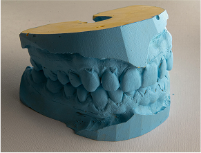
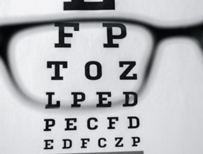

Providing Quality Healthcare For A
Brighter And Healthy Future
Our platform connects you with qualified healthcare professionals for
in-person or virtual consultations. Whether you need a quick check-up
or a specialist, schedule appointments easily and securely —
all in just a few clicks.
Find A Doctor
Our results in numbers
99%
Customer satisfaction
15k
Online patients
12k
Patients recovered
240%
Company growth
Services we Provide
Our comprehensive healthcare services combine advanced medical technology with personalized patient care to deliver exceptional treatment outcomes across multiple specialties-
all from the comfort of your home
all from the comfort of your home

Dental treatment
Comprehensive oral healthcare including preventive cleanings, restorative procedures, cosmetic dentistry, and advanced implant solutions.
Bones Treatment
Specialized orthopedic care for bone, joint, and musculoskeletal conditions. We provide innovative treatment options to restore mobility.

Diagnosis
Advanced diagnostic imaging using cutting-edge technology. Our expert medical team provides accurate diagnoses and detailed treatment planning.

Eye Care
Highly skilled neurosurgeon expert in complex brain and spinal procedures. Subspecialty training in minimally invasive techniques treating brain tumors to spinal disorders.

Cardiology
Interventional cardiologist preventing treating heart disease through innovative procedures and lifestyle medicine. Expertise includes cardiac catheterization and heart failure management.

Surgery
Medical oncologist specializing personalized cancer treatment and precision medicine. Comprehensive approach combining latest therapeutic advances with compassionate patient care.
Meet our team
Our experienced board combines medical expertise with strategic leadership, guiding our organization's commitment to innovative healthcare delivery and exceptional patient outcomes across all specialties.
John Carter
CEO & Co-Founder
Visionary leader with fifteen years healthcare innovation experience. Founded organization revolutionizing patient care through cutting-edge technology and compassionate service.
Sophie Moore
DENTAL SPECIALIST
Exceptional dental specialist combining technical precision with gentle patient approach. Advanced training in restorative cosmetic dentistry and implantology.
Matt Cannon
Orthopedic
Board-certified orthopedic surgeon specializing sports medicine and joint reconstruction. Extensive experience treating athletes using surgical and non-surgical approaches.
Andy Smith
Neurosurgeon
Highly skilled neurosurgeon expert in complex brain and spinal procedures. Subspecialty training in minimally invasive techniques treating brain tumors to spinal disorders.
Lily Woods
CARDIOLOGIST
Interventional cardiologist preventing treating heart disease through innovative procedures and lifestyle medicine. Expertise includes cardiac catheterization and heart failure management.
Patrick Meyer
ONCOLOGIST
Medical oncologist specializing personalized cancer treatment and precision medicine. Comprehensive approach combining latest therapeutic advances with compassionate patient care.
Testimonials
Hear directly from the patients whose lives we've touched. These authentic testimonials reflect our commitment to exceptional care, compassionate service, and outstanding medical outcomes across all our specialties
“An amazing service”
"Dr. Carter and his team completely transformed my experience with healthcare. After years of struggling with chronic pain, their comprehensive approach finally gave me my life back. The entire staff treated me like family, and the results exceeded all my expectations."
John Carter
CEO at Google
“One of a kind service”
"I was terrified of dental procedures until I met Dr. Moore. Her gentle approach and clear explanations made me feel completely at ease. The cosmetic work she did has given me the confidence to smile again. Truly life-changing!"
Sophie Moore
MD at Facebook
“The best service”
"As a professional athlete, I needed the best orthopedic care available. Dr. Cannon's expertise got me back on the field faster than I thought possible. His innovative treatment approach and dedication to my recovery were exceptional."
Andy Smith
CEO Dot Austere
Trusted in 26+ countries and over 250 hospitals around the world